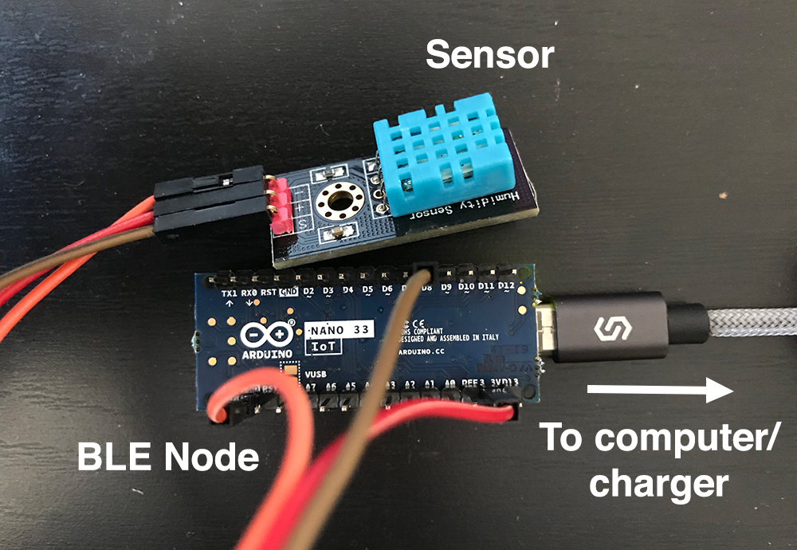
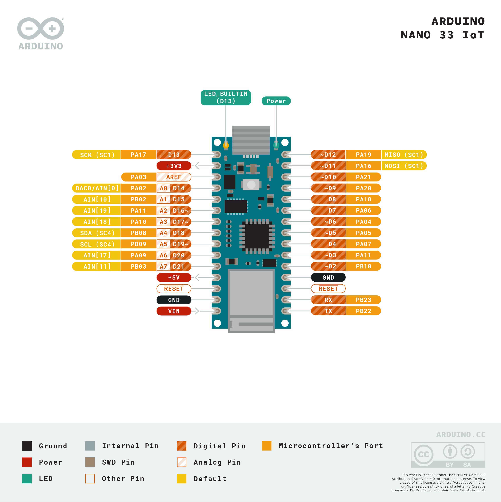
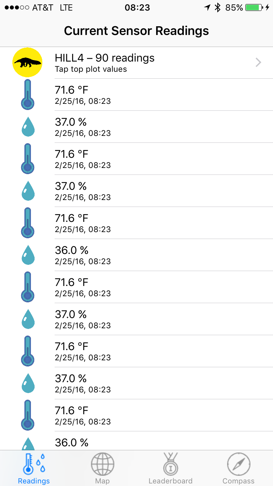

The goal of this lab is to implement code in the Anteater app to scan for a nearby Anthill, connect to it, and stream temperature and humidity readings from it. We have provided you with all of the code to show sensor readings in a table in the UI, and to plot sensor readings on a chart, but you will need to implement all of the networking code, and the code to extract sensor readings from packets sent by the Anthill.
Getting Started
Start by downloading the Anteater App Skeleton for Xcode 11+/iOS 13+. Uncompress this file to create a directory called "anteater-swift-blank". Open the anteater.xcodeproj file in this directory in XCode. You should be able to build and run the project in the simulator or your phone.
Known issue for Xcode 11+/iOS 13+: when you build and run the app in your iPhone for the first time and try to log in with any username, the app may crash. Simply build and run again. The app should skip the log-in screen without any error.
The Anteater code includes a skeleton class,
SensorModel.swift that you will need to implement. The
SensorModel class will implement BLEDelegate
and initialize an instance of BLE to handle interaction
with the device. In addition, to convey the status of a sensor
connection, SensorModel will make calls into a delegate,
which implements the SensorModelDelegate protocol defined
in SensorModel.swift. The methods of the delegate are as
follows:
func sensorModel(_ model: SensorModel, didChangeActiveHill hill: Hill?)
func sensorModel(_ model: SensorModel, didReceiveReadings readings: [Reading], forHill hill: Hill?)These methods let the application know when a new sensor connects, or when some data is received.
The code also includes a complete implementation of the class
HillsTableViewController, which creates an instance of
SensorModel and sets itself as the delegate of that
instance.
For iOS 13+, please make the following changes:
- Select your project from the navigator panel and then highlight the Build Settings tab. Filter the settings or locate “Other Linker Flags” from this list and then add “-ObjC -all_load” to these settings. (See this screenshot for reference.)
- Select “Info.plist” from the navigator panel and add a property “Privacy - Bluetooth Always Usage Description” with value “Bluetooth required”.
{kind=link}
This lab is divided into two sections. In the first section, you will implement the code to scan for and connect to an anthill, and then in the second section you will implement the code to extract readings from packets sent by the anthill and deliver them to the app.
To test this lab, you will need to obtain an anthill node. Note that the bluetooth functions you will implement do not work properly on the iPhone simulator, so you will need to test on a real device. If you are working with a partner, please check out only one anthill as we have a limited number of them. Please do not throw the box away.
The anthill you receive will have a sensor and a USB Micro port. To power the anthill, it will need to be powered over USB to your laptop, or to any other USB charger, as shown below:

The pins between the BLE node and sensor should be connected as follows:
- (+) on sensor to +3V3 on BLE node (Be careful, not D13!)
- (-) on sensor to GND on BLE node
- S or out on sensor to D8 on BLE node
There are two GND pins in total. If one does not work, try using other pins.

Section 1: Connecting to an Anthill
The goal of this section is to successfully establish a connection with an anthill. In the next section you will extract data from packets sent by the anthill.
Before working on this section, you should familiarize yourself with the basics of Bluetooth Low Energy (BLE) and the iOS APIs for accessing it. This Apple Document does a good job of summarizing these.
Each anthill acts as a BLE Peripheral. The connection protocol is not that complicated, but the code is somewhat messy as each step in the protocol is asynchronous; that is, you make a call to perform some BLE function, and some time later a callback is triggered in your application to indicate that the function has completed.
The basic sequence is as follows:
- Start scanning for anthills
- Once an anthill is discovered, connect to it
- Once you have connected, discover its services
- For each service, discover its characteristics
- For each characteristic, check if it is the sensor data characteristic; if it is, start listening for notifications to the state of the characteristic
- On each state update, process the received data to extract any sensor readings.
You will need to add several functions to SensorModel in
order to implement BLEDelegate:
func ble(didUpdateState state: BLEState)
func ble(didDiscoverPeripheral peripheral: CBPeripheral)
func ble(didConnectToPeripheral peripheral: CBPeripheral)
func ble(didDisconnectFromPeripheral peripheral: CBPeripheral)
func ble(_ peripheral: CBPeripheral, didReceiveData data: Data?)The SensorModel should inherit from BLEDelegate:
class SensorModel: BLEDelegate {
// ...
}Once you add the BLEDelegate part to indicate that,
Xcode will suggest you to add protocol stubs. Press “Fix” in the red
error box to add the five function signatures automatically, or you can
add them manually too.
Task 1: Initialize Bluetooth, and Start Scanning for Anthills
Before you can scan for an anthill, you need to initialize a
BLE object. A good place to do this is in the
init method of SensorModel. Since you will
need access this object repeatedly, you probably want to declare it as
an instance variable of the class.
Keep in mind that after initializing the object, you will need to set its delegate to the current SensorModel object:
ble.delegate = selfOnce you have created this object, the BLE will call
ble(didUpdateState ...) to indicate the status of
Bluetooth. You should check that the status is
BLEState.poweredOn and if it is, initiate scanning for
anthills.
To initiate scanning, call the startScanning method on
the BLE instance.
Once scanning has started, you will receive a callback to the
BLEDelegate method
ble(didDiscoverPeripheral ...). You will need to define
this method in SensorModel, as per the signature in the
BLEDelegate protocol defined in BLE.swift.
To verify that this task is completed, use the debugger to confirm
didUpdateState is called and that the status is
BLEState.poweredOn. Also verify that when
startScanning is called in the presence of an anthill, you
receive a callback to didDiscoverPeripheral.
Task 2: Implement
didDiscoverPeripheral
didDiscoverPeripheral will be called when a BLE
Peripheral advertising the above characteristic comes into proximity of
your phone. When this happens, you need to connect to device, and then
scan for services and characteristics.
When didDiscoverPeripheral is called, you are given a
handle to a CBPeripheral object. This is the peripheral you
want to try to connect to (in this lab, you are going to connect to the
first peripheral you discover, and stay connected to it until it moves
out of range, rather than trying to prioritize connecting to certain
anthills).
To connect to a peripheral, simply call
connectToPeripheral. If the connection is successful,
didConnectToPeripheral will be called. You will need to
define didConnectToPeripheral, as per the signature in
BLE.swift. Use the debugger to verify that this method is
called correctly.
Task 3: Implement
didConnectToPeripheral
Once you have connected to a peripheral, you will need to call the
delegate method didChangeActiveHill. The method takes an
instance of Hill, which is defined towards the top of
SensorModel.swift (the name of the Hill should be set to
peripheral.name). You should initialize a Hill and store it
in the activeHill instance variable, as the delegate will
expect the same Hill later for the didReceiveReadings
delegate method. You will also need to store the CBPeripheral in an
instance variable, as you will want to distinguish the peripheral
corresponding to activeHill from other peripherals.
After connecting to a peripheral, the BLE instance will
call the discoverServices function in the iOS BLE API;
then, after services are discovered, the BLE instance will
call didDiscoverCharacteristicsForService and handle
updates to the sensor data characteristic. Finally, the BLE
instance will request notifications for the sensor characteristic, and
the iOS API will call didUpdateValueForCharacteristic on
the BLE instance whenever a new packet of sensor data is
available. The BLE instance will then call
didReceiveData on the SensorModel.
To complete this task, verify that didReceiveData is
being called, e.g., by setting breakpoints in this method in the
debugger. If it is not called after about 30 seconds, see Troubleshooting.
Section 2: Extracting readings from an Anthill
When a connection is established, the Anthill begins streaming packets containing sensor data on the sensor data characteristic. You will need to extract sensor readings from this characteristic and post them to the application. (For the purposes of this lab, you do not explicitly request any data or send any commands to the anthill.)
The anthill sends a stream of ASCII characters, containing one of two types of messages: humidity readings and temperature readings. Each message begins with a single letter, and then has a custom payload. The messages are as follows:
- ‘H’: humidity. The payload consists of an ASCII representation of the percent relatively humidity, as a floating point number, followed by a ‘D’, indicating the end of the number.
- ‘T’: temperature. The payload consists of an ASCII representation of the temperature (in Fahrenheit), as a floating point number, followed by a ‘D’, indicating the end of the number.
Each call to didReceiveData should correspond to one BLE
packet (humidity or temperature). Every two seconds, each anthill
attempts read the humidity and temperature values from the sensor and
send a pair of packets. However, because of loose connections or
imperfect sensor, the packets may not be sent every two seconds.
Task 4: Implement didReceiveData
To complete this task, implement code to extract messages from the
stream of packets delivered to didReceiveData.
Once you have extracted a sensor reading from the stream, create a
Reading object from it (set type to either
ReadingType.Temperature or
ReadingType.Humidity, and sensorId to
peripheral.name). You should add it to the
activeHill’s readings array, which the UI will
access to update its list of sensor readings. Call the delegate method
didReceiveReadings, so that the delegate is notified of the
new readings.
You might find these code snippets useful:
// convert a non-nil Data optional into a String
let str = String(data: data!, encoding: String.Encoding.ascii)!
// get a substring that excludes the first and last characters
let substring = str[str.index(after: str.startIndex)..<str.index(before: str.endIndex)]
// convert a Substring to a Double
let value = Double(substring)!This task is complete when you can see sensor readings streaming into sensor reading display on the Anteater Readings screen, as shown below:

Task 5: Implement
didDisconnectFromPeripheral
When the connected hill is powered off,
didDisconnectFromPeripheral will be called. If the provided
peripheral matches the one corresponding to the activeHill,
you should reset activeHill to nil then call
didChangeActiveHill with nil, so that the
delegate is notified that there is no longer any connected hill. Lastly,
initiate scanning to start scanning for new connections.
To verify, disconnect the anthill from power and check that the readings are no longer displayed. Then, connect the anthill to power and check that your phone automatically reconnects with the anthill and displays the new readings once the connection is established.
Troubleshooting
While it is unlikely to happen, if you suspect that no packets are being sent despite correct sensor connections, you can debug it by following the instructions below.
- Connect the Arduino board to your computer
- Install the Arduino IDE
- Go to Tools > Board > select “Arduino NANO 33 IoT”
- Go to Tools > Port > select an option that ends with “(Arduino NANO 33 IoT)”
- Go to Tools > Serial Monitor
You should see a window that prints “HELLO WORLD” every two seconds and the temperature and humidity value pairs every time the packets are sent (reference). If your iPhone app fails to detect any packet after implementing it in Xcode and the Serial Monitor does not show the messages as described, please contact us to get a new board and sensor.
{kind=link}
Submission and Checkoff Instructions
Write up your answers to the following items in a single PDF file and name it lab2_${mit_username}.pdf or lab2_${mit_username1}+${mit_username2}.pdf if you work with a partner (e.g. lab2_mihirt.pdf or lab2_mihirt+bnagda.pdf). Upload the PDF file to Gradescope by Mar 11, 11:59 PM. If you work with a partner, you only have to submit once, but each partner must each do a checkoff. You can get a checkoff during Office Hours within a week after the submission deadline, i.e. Mar 18, 11:59 PM. You do not need to submit your code, but we may ask to look at your code during the checkoff.
- Names and MIT emails (including your lab partner, if available)
- How does a central (your phone) discover a peripheral (an anthill)?
- What is the relationship between a peripheral, a service, and a characteristic? (Hint: review this Apple Document)
- Provide a screenshot for the Anteater app with sensor readings, similar to the example screenshot
- Estimated number of hours you spent on this lab per person
- Any comments/suggestions for the lab? Any questions you may have for the checkoff? (Optional)
A checkoff will require successfully displaying sensor readings on the Readings screen, as well as disconnecting from and reconnecting to an anthill (by powering it down and powering it back up.) The app should no longer display the readings if the anthill is powered off, and should automatically reconnect to the anthill once it is powered on again.